|
Juan Crisostomo Ibarra y Magsalin
|
Ibarra is a young man who studied in Europe for seven years.
He is the son of Don Rafael.
Ibarra: Inquirer. (2023, May 4.). Dennis Trillo says ‘Maria Clara At Ibarra’ role taught him to ‘fight for what’s right’. https://entertainment.inquirer.net/497888/dennis-trillo-says-maria-clara-at-ibarra-roles-taught-him-to-fight-for-whats-right
|

|
Don Rafael Ibarra
|
Part of the Ibarra family (Who owns San Diego.)
He is the father of Ibarra.
Don Rafael: Personality data base.(2022, May.). Don Rafael. https://www.personality-database.com/profile/500981/don-rafael-ibarra-noli-me-tngere-el-filibusterismo-mbti-personality-type#google_vignette
|
|
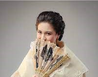
|
Maria Clara
|
The daughter of Capitan Tiago and his late wife.
Was supposed to be in an arranged marriage with Ibarra.
Maria Clara: Preview. (2022, Oct. 18.). Everything You Need to Know About the Costumes in Historical TV Series "Maria Clara at Ibarra. https://www.preview.ph/fashion/historical-series-maria-clara-at-ibarra-costumes-stylist-a00392-20221018
|
|
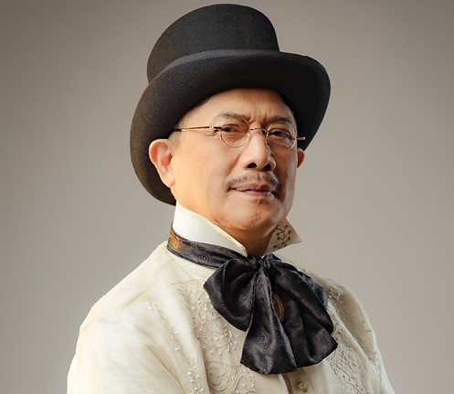
|
Don Santiago de los Santos
|
Also known as Capitan Tiago.
Father of Maria Clara, and husband of Donya Pia Alba.
He is very religious man.
Capitan Tiago: pikapika. (2022.). latest GMA historical portal fantasy series Maria Clara at Ibarra. https://www.pikapika.ph/pikachur/the-old-meets-new-in-latest-gma-historical-portal-fantasy-series-maria-clara-at-ibarra
|

|
Tiya Isabel |
Helped in raising Maria Clara (Acts as her step-mother.)
She is the cousin of Capitan Tiago.
Tiya Isabel: Celebrity World PH. (2022, October 3.). Old meets new in the historical portal fantasy series ‘Maria Clara at Ibarra’. https://celebrityworldph.wordpress.com/2022/10/03/old-meets-new-in-the-historical-portal-fantasy-series-maria-clara-at-ibarra/
|

|
Father Damaso
|
The antagonist of the Noli Me Tangere story.
A friar who is always cruel and harsh.
Father Damaso: Celebrity World PH. (2023, January 30.). Tirso Cruz III plays acting piece as Padre Damaso in ‘Maria Clara at Ibarra’. https://celebrityworldph.wordpress.com/2023/01/30/tirso-cruz-iii-plays-acting-piece-as-padre-damaso-in-maria-clara-at-ibarra/
|
|
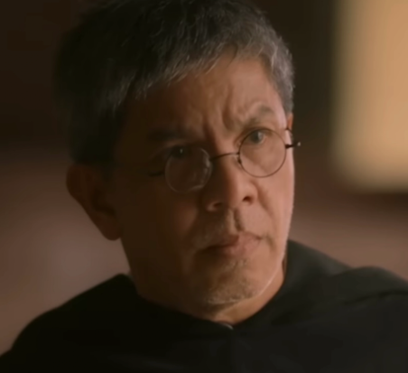
|
Father Sibyla |
He works as a priest.
He was shown to be a character that irritates Father Damaso.
Father Sibyla: Fandom. (n.d.). Padre Sibyla. https://mariaclaraatibarra.fandom.com/wiki/Padre_Sibyla
|
|
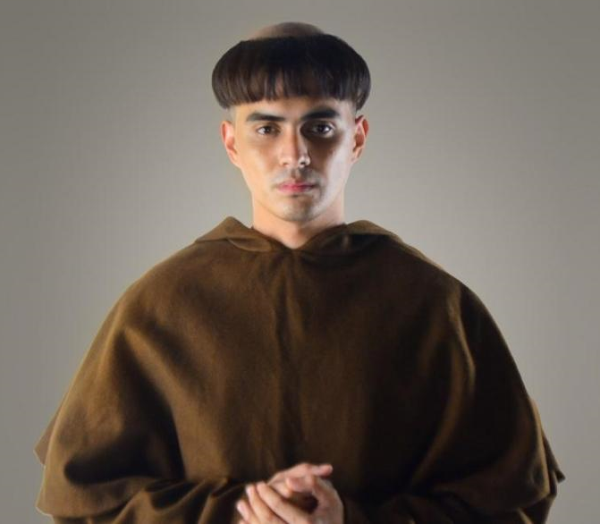
|
Father Salvi
|
He is fragile because he has a sickness.
He and Alperes do not get along easily. They are both against one another.
Father Salvi: GMA Entertainment. (2022, October 2.). Juancho Trivino, first time gaganap bilang kontrabida sa 'Maria Clara at Ibarra'. https://www.gmanetwork.com/entertainment/tv/maria_clara_at_ibarra/93340/juancho-trivino-first-time-gaganap-bilang-kontrabida-sa-maria-clara-at-ibarra/story
|
|
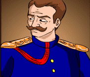
|
Alperes |
Leader of the civil guards.
Married to Donya Consolacion.
Does not like Father Salvi.
Alperes: Personality data base. (2022.). Alperes. https://www.personality-database.com/profile/500985/alperes-noli-me-tngere-el-filibusterismo-mbti-personality-type
|
|
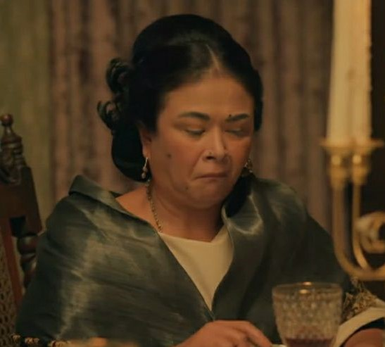
|
Donya Consolacion |
Is married to Alperes.
She is a fully blooded Filipino, however she prefers to speak Spanish.
Donya Consolacion: Pinterest. (n.d.). doña consolacion. https://www.pinterest.ph/pin/doa-consolacion--914934480525065475/
|
|
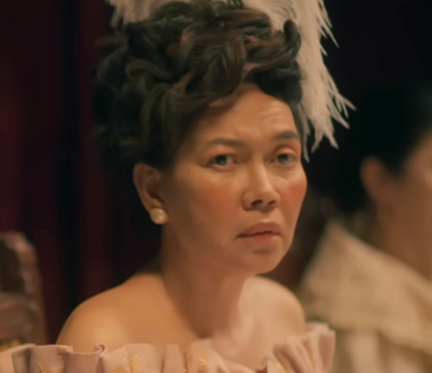
|
Donya Victorina de Espadaña |
Married to Don Tiburcio.
Always wear European clothes.
Donya Victorina: Fandom. (n.d.). Doña Victorina. https://mariaclaraatibarra.fandom.com/wiki/Do%C3%B1a_Victorina
|
|
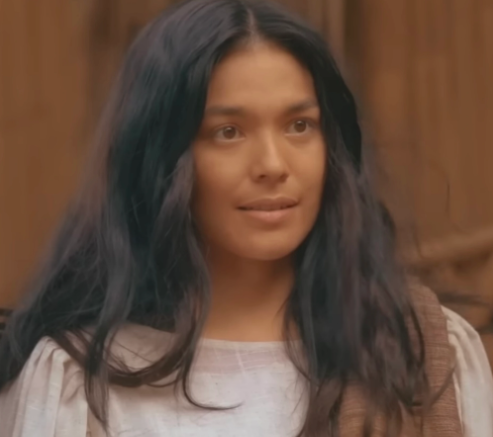
|
Sisa |
a Filipino mother in San Diego.
The mother of two boys, Basilio and Crispin.
Sisa: Fandom. (n.d.). Sisa. https://mariaclaraatibarra.fandom.com/wiki/Sisa
|
|
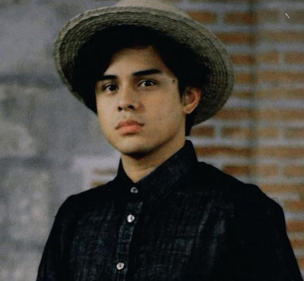
|
Basilio |
He is also the brother of Crispin.
He is a young apprentice to become a sexton along with his brother.
Basilio: GMA Entertainment. (2023. February 2.). Khalil Ramos shares dapper pic of him as Basilio: 'Buenas noches'. https://www.gmanetwork.com/news/showbiz/chikaminute/859445/khalil-ramos-shares-dapper-pic-of-him-as-basilio-buenas-noches/story/
|
|
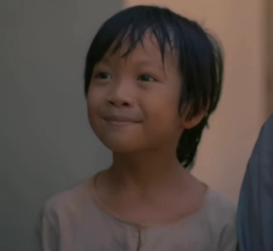
|
Crispin |
He is the younger brother of Basilio.
The son of Sisa and Pedro.
Crispin: Fandom. (n.d.). Crispin. https://mariaclaraatibarra.fandom.com/wiki/Crispin
|
|
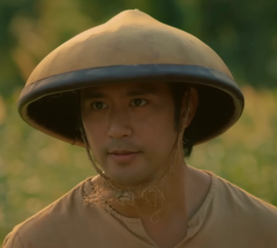
|
Elias |
He lives in San Diego.
A wise farmer.
Elias: Fandom. (n.d.). Elias. https://mariaclaraatibarra.fandom.com/wiki/Elias
|
|
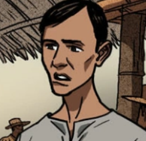
|
Bruno Alasigan |
Brother of Tarsilo.
Unfortunately, his character dies in the story.
Bruno: Fandom. (n.d.). Bruno. https://noli-me-tangere.fandom.com/wiki/Bruno_Alasigan
|